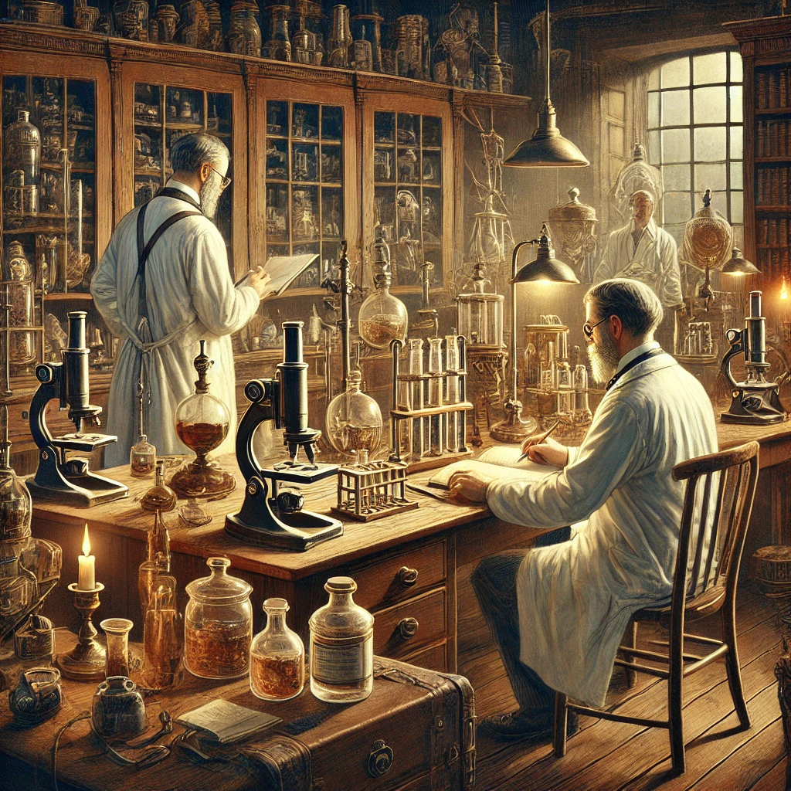

이중나선
목차
작가
제임스 왓슨
출판일
1968년
감상평에 대한 AI그림
"이중나선"에는 과학적 사실뿐만 아니라 연구 과정이 얼마나 흥미로운 과정인지를 잘 나타낸다.
DNA 구조의 발견은 인간의 유전과 관련한 난제들을 해결하는 과정처럼 느껴져 흥미로웠다.
연구 과정은 지식을 쌓아나가는 과정이면서도 미래로 나아가게 하는 과정임을 느낄 수 있었다.

감상평에 대한 AI 감정 평가
### **🔹 감정 평가**
1. **흥미와 몰입 (Interest & Engagement) 🎯**
- "연구 과정이 얼마나 흥미로운 과정인지를 잘 나타낸다."
- 과학적 발견이 단순한 사실의 나열이 아니라, 흥미로운 여정이라는 점을 강조함.
- 연구의 과정 자체에 대한 관심과 재미를 느낀 감정이 담겨 있음.
2. **경이로움과 감탄 (Awe & Admiration) 😲**
- "DNA 구조의 발견은 인간의 유전과 관련한 난제들을 해결하는 과정처럼 느껴져 흥미로웠다."
- DNA 구조 발견이 과학적으로 얼마나 중요한지에 대한 감탄과 경이로움이 드러남.
3. **성장과 통찰 (Growth & Insight) 🔍**
- "연구 과정은 지식을 쌓아나가는 과정이면서도 미래로 나아가게 하는 과정임을 느낄 수 있었다."
- 연구를 단순한 탐구가 아니라, 인류의 발전과 연결 지어 생각하는 태도.
- 과학적 연구의 의미를 더 깊이 이해하고 깨달음을 얻은 감정이 담겨 있음.
### **🔹 종합적 감정 평가**
이 글에서는 **흥미, 경이로움, 성장과 통찰**의 감정이 주요하게 나타나.
연구라는 과정 자체를 즐겁고 의미 있는 여정으로 받아들이는 태도가 돋보이며, 과학이 단순한 사실 탐구를 넘어 미래를 향한 과정이라는 점을 인식한 것이 인상적이야! 😊